A quick tour of mfpp
Zsolt T. Kosztyan, Aamir Saghir
04 Jún 2022
Source:vignettes/mfpp.Rmd
mfpp.RmdBuild matrix-based projects and calculate their demands
Specify logic domain (LD), and time domain (TD)
# Calculatation of EST, EFT, LST and LFT times of activity of a project
# Define a 3 by 3 upper triangular binary matrix (DSM) of logic domain (LD) of a project.
# Specify the precendence of three tasks
# Diagonal values indicates the priority of tasks
# 1=the task is mandatory
LD<-rbind(c(1,0,1), c(0,1,0), c(0,0,1))
# Define a 3 by 1 vector of time durations of a project, where the durations are 3,4,5 respectively.
TD<-c(3,4,5)
# Calculate project duration (total project time, TPT)
TPT<-tpt(LD,TD)
summary(TPT)##
##
## Table of schedule
## Dur EST EFT LST LFT TF SST SFT SF Is.Crit
## a_1 3 0 3 0 3 0 0 3 0 TRUE
## a_2 4 0 4 4 8 4 0 4 4 FALSE
## a_3 5 3 8 3 8 0 3 8 0 TRUE
# Specify initial scheduled start time, where the delay is 1 for the .
SST <- c(1,1,0)
# Including scheduled starts and finishes.
TPT<-tpt(LD,TD,SST)
# Print schedule table
summary(TPT)##
##
## Table of schedule
## Dur EST EFT LST LFT TF SST SFT SF Is.Crit
## a_1 3 0 3 0 3 0 1 4 -1 TRUE
## a_2 4 0 4 4 8 4 1 5 3 FALSE
## a_3 5 3 8 3 8 0 4 9 -1 TRUE
# Plot the scheduled Gantt chart
plot(TPT,sched="S")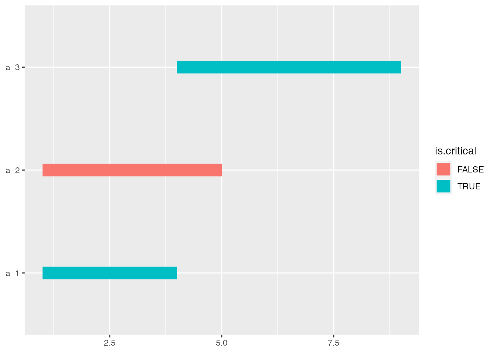
Specify cost domain (CD), quality domain (QD), and resource domain (RD)
# Specify seed
set.seed(6)
# Specify the cost demands
CD<-c(10,20,24)
cat("\nTotal Project Cost (TPC): ",tpc(LD,CD))##
## Total Project Cost (TPC): 54
# Specify quality parameters
q<-runif(3)
# For fixed project plan the TPQ is the geometric mean of quality parameters
cat("\nTotal Project Quality (TPC): ",tpq(LD,LD,q)) ##
## Total Project Quality (TPC): 0.5316529
# Calculate relative quality for the selected completion modes
QD2<-cbind(q,runif(3)) # Generate two completion modes
# Calculate relative quality considering the best choice
cat("\nRelative TPQ: ",tpq(LD,LD,q,QD2)) ##
## Relative TPQ: 0.7169994
# Generate resource demands (RD)
RD<-round(cbind(runif(3,min = 0,max=5),runif(3,min=0,max=5)))
cat("\n\nTotal Project Resources (TPR)\n\n")##
##
## Total Project Resources (TPR)
tpr(TPT$SST,LD,TD,RD)## R_1 R_2
## TPR 9 8
## Plot resources for SST
tpr(TPT$SST,LD,TD,RD,res.graph = TRUE)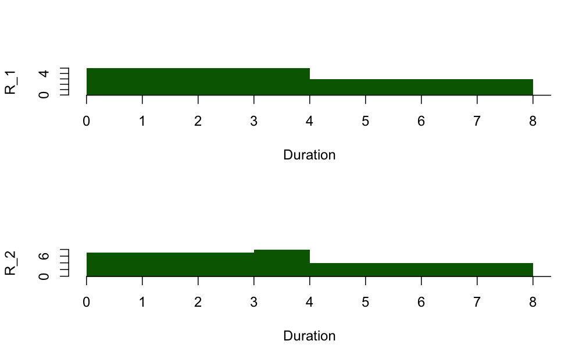
## R_1 R_2
## TPR 9 8Generate a flexible project network
# Generation of PDM matrix for flexible project planning MFPP package.
# Define number of modes, flexibility factor and connectivity factor of a project scenerio.
N=5;ff=0.30;cf=0
# Define maximum value of time domain, Cost domain and Resourcces domain of a project scenerio.
mTD=3;mCD=4;mRD=3
# Define number of modes, number of resources,
# number of possible extra tasks (nW), scale and quality domain of a project scenerio.
w=2;nR=2;nW=1
scale=1.6
PDM<-generatepdm(N,ff,cf,mTD,mCD,mRD,w,nR,nW,scale,QD=TRUE,lst=TRUE)
summary(PDM) # Summary of PDM list##
## summary PDM list:
##
## Number of completion modes (w): 2
## Number of resources (Rs): 2
## summary PDM matrix:
## a_1 a_2 a_3 a_4 a_5 a_6 t_1 t_2 c_1
## a_1 0.8996805 1.0000000 0.0000000 1 1 0 2.809700 2.844662 2.214662
## a_2 0.0000000 0.6023889 1.0000000 0 0 0 2.229386 2.752626 2.373684
## a_3 0.0000000 0.0000000 0.9282092 0 0 0 2.195172 2.218452 3.394187
## a_4 0.0000000 0.0000000 0.0000000 1 0 0 2.501854 2.647490 1.944377
## a_5 0.0000000 0.0000000 0.0000000 0 1 0 1.393354 1.673179 3.257293
## a_6 0.0000000 0.0000000 0.0000000 0 0 0 0.000000 0.000000 0.000000
## c_2 q_1 q_2 r_1.1 r_2.1 r_1.2 r_2.2
## a_1 2.575008 0.5249795 0.5500175 1.646750 1.962195 0.7169741 0.772407
## a_2 2.692506 0.9053482 0.9614625 2.672756 2.982463 2.0825999 2.207661
## a_3 3.863461 0.7908406 0.8449759 2.765840 2.963731 2.3847546 2.613498
## a_4 2.390865 0.5620840 0.6546224 1.915394 2.377417 1.8365222 2.025842
## a_5 3.874045 0.4669808 0.5403975 1.938388 2.098193 2.5202051 2.828393
## a_6 0.000000 0.0000000 0.0000000 0.000000 0.000000 0.0000000 0.000000
## attr(,"class")
## [1] "PDM_matrix"
##
## Minimal constraints:
##
## Summary of the PDM constraints structure:
##
## Time constraint (Ct): 2.501854
## Const constraint (Cc): 5.20167
## Score/scope constraint (Cs): 0.3768358
## Quailty constraint (Cq): 0.1257496
##
## Maximal constraints:
##
## Summary of the PDM constraints structure:
##
## Time constraint (Ct): 4.971078
## Const constraint (Cc): 15.39588
## Score/scope constraint (Cs): 0.8918022
## Quailty constraint (Cq): 0.5998342
## Resource constraint(s) (CR):## R_1 R_2
## TPR 7.458073 7.467733Plot main structures of flexible project structures
plot(PDM) # Plot PDM structures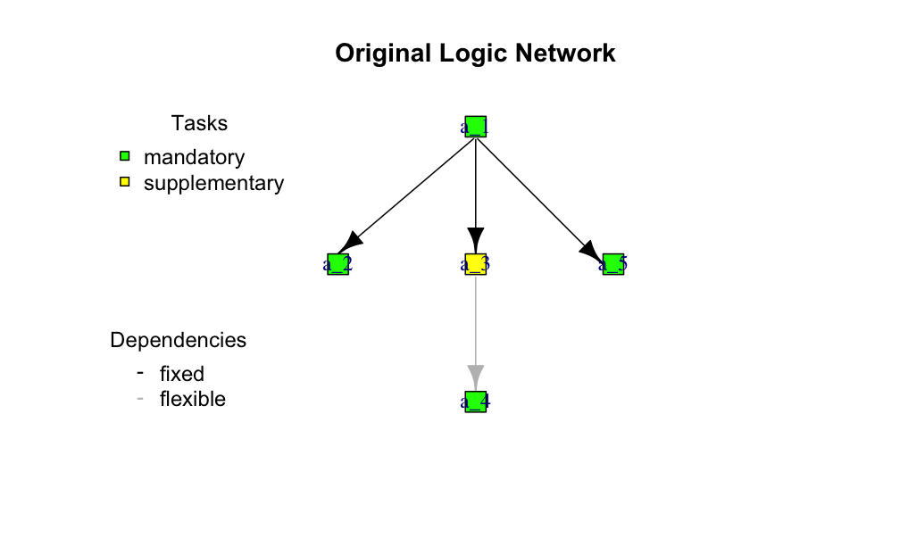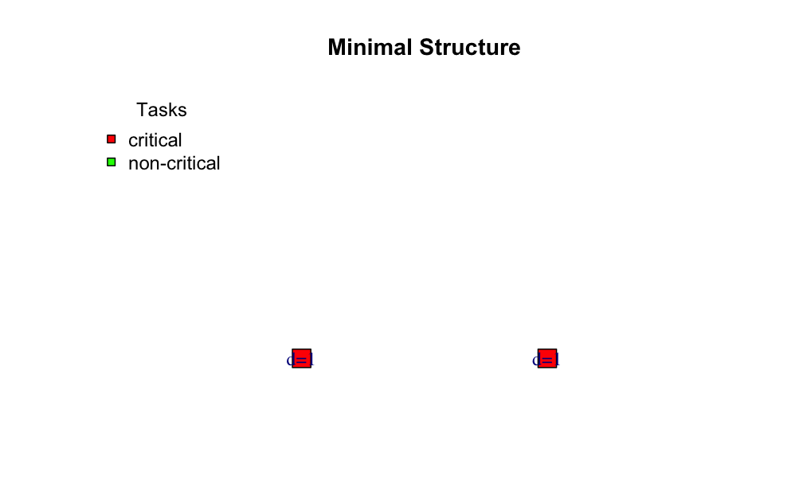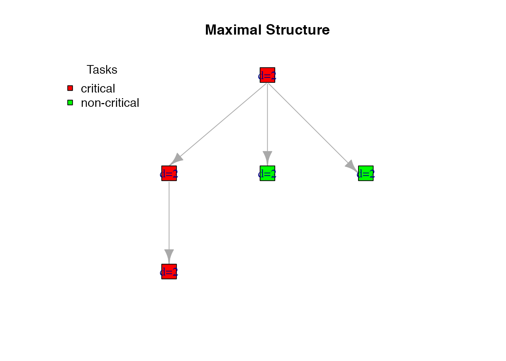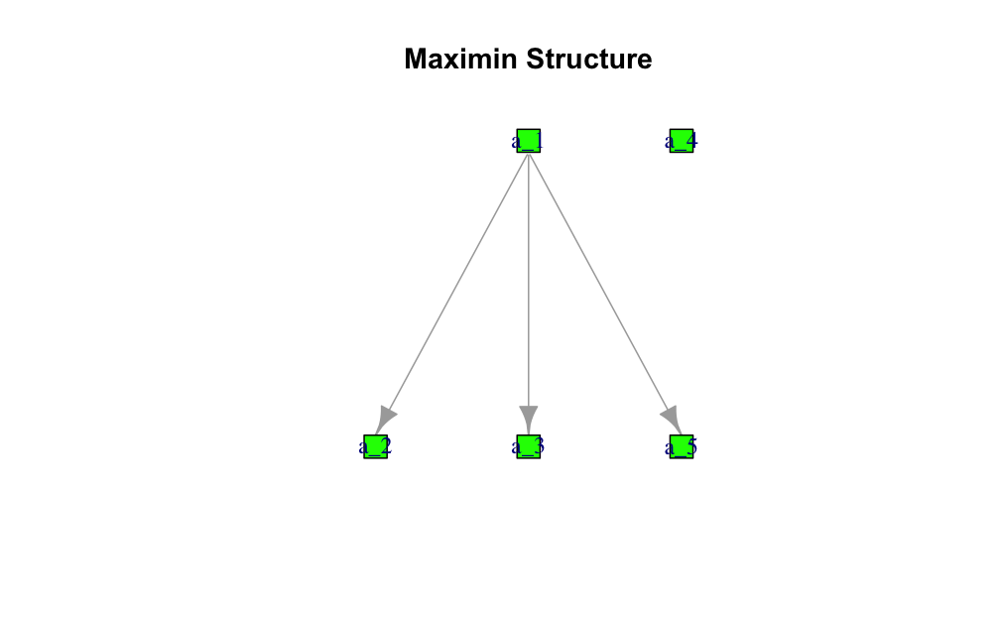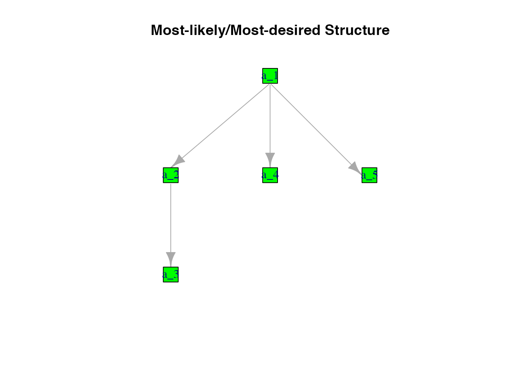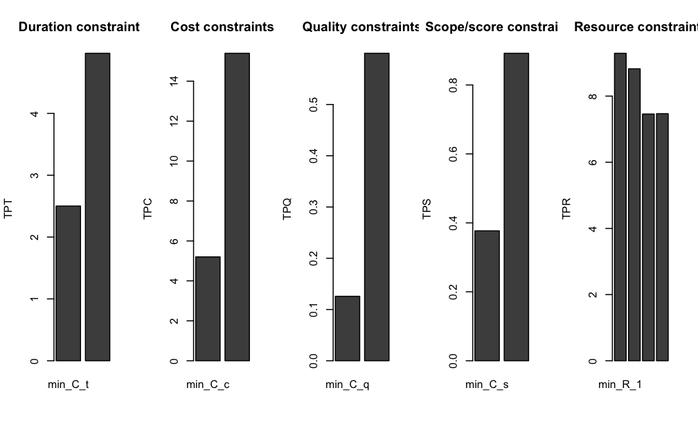
Get most likely/most desired structure
# Get most likely / most desired project structure list (PSM_list)
PSM_list<-get.structures(PDM,type = "most")$moststruct
summary(PSM_list)##
## summary PDM list:
##
## Number of completion modes (w): 2
## Number of resources (Rs): 2
## summary PDM matrix:
## a_1 a_2 a_3 a_4 a_5 a_6 t_1 t_2 c_1 c_2 q_1
## a_1 1 1 0 1 1 0 2.809700 2.844662 2.214662 2.575008 0.5249795
## a_2 0 1 1 0 0 0 2.229386 2.752626 2.373684 2.692506 0.9053482
## a_3 0 0 1 0 0 0 2.195172 2.218452 3.394187 3.863461 0.7908406
## a_4 0 0 0 1 0 0 2.501854 2.647490 1.944377 2.390865 0.5620840
## a_5 0 0 0 0 1 0 1.393354 1.673179 3.257293 3.874045 0.4669808
## a_6 0 0 0 0 0 0 0.000000 0.000000 0.000000 0.000000 0.0000000
## q_2 r_1.1 r_2.1 r_1.2 r_2.2
## a_1 0.5500175 1.646750 1.962195 0.7169741 0.772407
## a_2 0.9614625 2.672756 2.982463 2.0825999 2.207661
## a_3 0.8449759 2.765840 2.963731 2.3847546 2.613498
## a_4 0.6546224 1.915394 2.377417 1.8365222 2.025842
## a_5 0.5403975 1.938388 2.098193 2.5202051 2.828393
## a_6 0.0000000 0.000000 0.000000 0.0000000 0.000000
## attr(,"class")
## [1] "PDM_matrix"
##
## Minimal constraints:
##
## Summary of the PDM constraints structure:
##
## Time constraint (Ct): 4.424558
## Const constraint (Cc): 13.1842
## Score/scope constraint (Cs): 1
## Quailty constraint (Cq): 0.629259
##
## Maximal constraints:
##
## Summary of the PDM constraints structure:
##
## Time constraint (Ct): 4.971078
## Const constraint (Cc): 15.39588
## Score/scope constraint (Cs): 1
## Quailty constraint (Cq): 0.691467
## Resource constraint(s) (CR):## R_1 R_2
## TPR 7.458073 7.467733Calculate optimal schedules of completion modes
# Get PSM matrix
# Drop excluded tasks, and their demands
PSM<-round(truncpdm(PSM_list$PDM))
w<-PSM_list$w # Get number of completion modes
Rs<-PSM_list$Rs # Get number of resurces
DSM<-PSM[,1:nrow(PSM)] # Get PSM matrix
# Get time demands (time domain, TD)
TD<-PSM[,paste("t",1:w,sep = "_")]
# Get resource demands (resource domain, RD)
RD<-PSM[,tail(colnames(PSM),w*Rs)]
# Calculate optimal schedules for both completion modes
RES1<-paretores(DSM,TD[,1],RD[,1:Rs])
RES2<-paretores(DSM,TD[,2],RD[,(Rs+1):(2*Rs)])Get a collection of projects
# Get the Boctor's simulation database
# Boctor, F. F. (1993).
# Heuristics for scheduling projects with resource restrictions and several resource-duration modes.
# The International Journal of Production Research,
# 31(11), 2547–2558,
# https://doi.org/10.1080/00207549308956882.
data(Boctor)
Collection<-Boctor
summary(Collection)##
##
##
## Summary of PDM collection:
##
## Number of projects: 240
## List of projects:
## Project name: boct1, w: 4, Rs: 1
## Project name: boct10, w: 4, Rs: 2
## Project name: boct100, w: 4, Rs: 2
## Project name: boct101, w: 4, Rs: 4
## Project name: boct102, w: 4, Rs: 4
## Project name: boct103, w: 4, Rs: 1
## Project name: boct104, w: 4, Rs: 1
## Project name: boct105, w: 4, Rs: 2
## Project name: boct106, w: 4, Rs: 2
## Project name: boct107, w: 4, Rs: 4
## Project name: boct108, w: 4, Rs: 4
## Project name: boct109, w: 4, Rs: 1
## Project name: boct11, w: 4, Rs: 4
## Project name: boct110, w: 4, Rs: 1
## Project name: boct111, w: 4, Rs: 2
## Project name: boct112, w: 4, Rs: 2
## Project name: boct113, w: 4, Rs: 4
## Project name: boct114, w: 4, Rs: 4
## Project name: boct115, w: 4, Rs: 1
## Project name: boct116, w: 4, Rs: 1
## Project name: boct117, w: 4, Rs: 2
## Project name: boct118, w: 4, Rs: 2
## Project name: boct119, w: 4, Rs: 4
## Project name: boct12, w: 4, Rs: 4
## Project name: boct120, w: 4, Rs: 4
## Project name: boct121, w: 4, Rs: 1
## Project name: boct122, w: 4, Rs: 1
## Project name: boct123, w: 4, Rs: 2
## Project name: boct124, w: 4, Rs: 2
## Project name: boct125, w: 4, Rs: 4
## Project name: boct126, w: 4, Rs: 4
## Project name: boct127, w: 4, Rs: 1
## Project name: boct128, w: 4, Rs: 1
## Project name: boct129, w: 4, Rs: 2
## Project name: boct13, w: 4, Rs: 1
## Project name: boct130, w: 4, Rs: 2
## Project name: boct131, w: 4, Rs: 4
## Project name: boct132, w: 4, Rs: 4
## Project name: boct133, w: 4, Rs: 1
## Project name: boct134, w: 4, Rs: 1
## Project name: boct135, w: 4, Rs: 2
## Project name: boct136, w: 4, Rs: 2
## Project name: boct137, w: 4, Rs: 4
## Project name: boct138, w: 4, Rs: 4
## Project name: boct139, w: 4, Rs: 1
## Project name: boct14, w: 4, Rs: 1
## Project name: boct140, w: 4, Rs: 1
## Project name: boct141, w: 4, Rs: 2
## Project name: boct142, w: 4, Rs: 2
## Project name: boct143, w: 4, Rs: 4
## Project name: boct144, w: 4, Rs: 4
## Project name: boct145, w: 4, Rs: 1
## Project name: boct146, w: 4, Rs: 1
## Project name: boct147, w: 4, Rs: 2
## Project name: boct148, w: 4, Rs: 2
## Project name: boct149, w: 4, Rs: 4
## Project name: boct15, w: 4, Rs: 2
## Project name: boct150, w: 4, Rs: 4
## Project name: boct151, w: 4, Rs: 1
## Project name: boct152, w: 4, Rs: 1
## Project name: boct153, w: 4, Rs: 2
## Project name: boct154, w: 4, Rs: 2
## Project name: boct155, w: 4, Rs: 4
## Project name: boct156, w: 4, Rs: 4
## Project name: boct157, w: 4, Rs: 1
## Project name: boct158, w: 4, Rs: 1
## Project name: boct159, w: 4, Rs: 2
## Project name: boct16, w: 4, Rs: 2
## Project name: boct160, w: 4, Rs: 2
## Project name: boct161, w: 4, Rs: 4
## Project name: boct162, w: 4, Rs: 4
## Project name: boct163, w: 4, Rs: 1
## Project name: boct164, w: 4, Rs: 1
## Project name: boct165, w: 4, Rs: 2
## Project name: boct166, w: 4, Rs: 2
## Project name: boct167, w: 4, Rs: 4
## Project name: boct168, w: 4, Rs: 4
## Project name: boct169, w: 4, Rs: 1
## Project name: boct17, w: 4, Rs: 4
## Project name: boct170, w: 4, Rs: 1
## Project name: boct171, w: 4, Rs: 2
## Project name: boct172, w: 4, Rs: 2
## Project name: boct173, w: 4, Rs: 4
## Project name: boct174, w: 4, Rs: 4
## Project name: boct175, w: 4, Rs: 1
## Project name: boct176, w: 4, Rs: 1
## Project name: boct177, w: 4, Rs: 2
## Project name: boct178, w: 4, Rs: 2
## Project name: boct179, w: 4, Rs: 4
## Project name: boct18, w: 4, Rs: 4
## Project name: boct180, w: 4, Rs: 4
## Project name: boct181, w: 4, Rs: 1
## Project name: boct182, w: 4, Rs: 1
## Project name: boct183, w: 4, Rs: 2
## Project name: boct184, w: 4, Rs: 2
## Project name: boct185, w: 4, Rs: 4
## Project name: boct186, w: 4, Rs: 4
## Project name: boct187, w: 4, Rs: 1
## Project name: boct188, w: 4, Rs: 1
## Project name: boct189, w: 4, Rs: 2
## Project name: boct19, w: 4, Rs: 1
## Project name: boct190, w: 4, Rs: 2
## Project name: boct191, w: 4, Rs: 4
## Project name: boct192, w: 4, Rs: 4
## Project name: boct193, w: 4, Rs: 1
## Project name: boct194, w: 4, Rs: 1
## Project name: boct195, w: 4, Rs: 2
## Project name: boct196, w: 4, Rs: 2
## Project name: boct197, w: 4, Rs: 4
## Project name: boct198, w: 4, Rs: 4
## Project name: boct199, w: 4, Rs: 1
## Project name: boct2, w: 4, Rs: 1
## Project name: boct20, w: 4, Rs: 1
## Project name: boct200, w: 4, Rs: 1
## Project name: boct201, w: 4, Rs: 2
## Project name: boct202, w: 4, Rs: 2
## Project name: boct203, w: 4, Rs: 4
## Project name: boct204, w: 4, Rs: 4
## Project name: boct205, w: 4, Rs: 1
## Project name: boct206, w: 4, Rs: 1
## Project name: boct207, w: 4, Rs: 2
## Project name: boct208, w: 4, Rs: 2
## Project name: boct209, w: 4, Rs: 4
## Project name: boct21, w: 4, Rs: 2
## Project name: boct210, w: 4, Rs: 4
## Project name: boct211, w: 4, Rs: 1
## Project name: boct212, w: 4, Rs: 1
## Project name: boct213, w: 4, Rs: 2
## Project name: boct214, w: 4, Rs: 2
## Project name: boct215, w: 4, Rs: 4
## Project name: boct216, w: 4, Rs: 4
## Project name: boct217, w: 4, Rs: 1
## Project name: boct218, w: 4, Rs: 1
## Project name: boct219, w: 4, Rs: 2
## Project name: boct22, w: 4, Rs: 2
## Project name: boct220, w: 4, Rs: 2
## Project name: boct221, w: 4, Rs: 4
## Project name: boct222, w: 4, Rs: 4
## Project name: boct223, w: 4, Rs: 1
## Project name: boct224, w: 4, Rs: 1
## Project name: boct225, w: 4, Rs: 2
## Project name: boct226, w: 4, Rs: 2
## Project name: boct227, w: 4, Rs: 4
## Project name: boct228, w: 4, Rs: 4
## Project name: boct229, w: 4, Rs: 1
## Project name: boct23, w: 4, Rs: 4
## Project name: boct230, w: 4, Rs: 1
## Project name: boct231, w: 4, Rs: 2
## Project name: boct232, w: 4, Rs: 2
## Project name: boct233, w: 4, Rs: 4
## Project name: boct234, w: 4, Rs: 4
## Project name: boct235, w: 4, Rs: 1
## Project name: boct236, w: 4, Rs: 1
## Project name: boct237, w: 4, Rs: 2
## Project name: boct238, w: 4, Rs: 2
## Project name: boct239, w: 4, Rs: 4
## Project name: boct24, w: 4, Rs: 4
## Project name: boct240, w: 4, Rs: 4
## Project name: boct25, w: 4, Rs: 1
## Project name: boct26, w: 4, Rs: 1
## Project name: boct27, w: 4, Rs: 2
## Project name: boct28, w: 4, Rs: 2
## Project name: boct29, w: 4, Rs: 4
## Project name: boct3, w: 4, Rs: 2
## Project name: boct30, w: 4, Rs: 4
## Project name: boct31, w: 4, Rs: 1
## Project name: boct32, w: 4, Rs: 1
## Project name: boct33, w: 4, Rs: 2
## Project name: boct34, w: 4, Rs: 2
## Project name: boct35, w: 4, Rs: 4
## Project name: boct36, w: 4, Rs: 4
## Project name: boct37, w: 4, Rs: 1
## Project name: boct38, w: 4, Rs: 1
## Project name: boct39, w: 4, Rs: 2
## Project name: boct4, w: 4, Rs: 2
## Project name: boct40, w: 4, Rs: 2
## Project name: boct41, w: 4, Rs: 4
## Project name: boct42, w: 4, Rs: 4
## Project name: boct43, w: 4, Rs: 1
## Project name: boct44, w: 4, Rs: 1
## Project name: boct45, w: 4, Rs: 2
## Project name: boct46, w: 4, Rs: 2
## Project name: boct47, w: 4, Rs: 4
## Project name: boct48, w: 4, Rs: 4
## Project name: boct49, w: 4, Rs: 1
## Project name: boct5, w: 4, Rs: 4
## Project name: boct50, w: 4, Rs: 1
## Project name: boct51, w: 4, Rs: 2
## Project name: boct52, w: 4, Rs: 2
## Project name: boct53, w: 4, Rs: 4
## Project name: boct54, w: 4, Rs: 4
## Project name: boct55, w: 4, Rs: 1
## Project name: boct56, w: 4, Rs: 1
## Project name: boct57, w: 4, Rs: 2
## Project name: boct58, w: 4, Rs: 2
## Project name: boct59, w: 4, Rs: 4
## Project name: boct6, w: 4, Rs: 4
## Project name: boct60, w: 4, Rs: 4
## Project name: boct61, w: 4, Rs: 1
## Project name: boct62, w: 4, Rs: 1
## Project name: boct63, w: 4, Rs: 2
## Project name: boct64, w: 4, Rs: 2
## Project name: boct65, w: 4, Rs: 4
## Project name: boct66, w: 4, Rs: 4
## Project name: boct67, w: 4, Rs: 1
## Project name: boct68, w: 4, Rs: 1
## Project name: boct69, w: 4, Rs: 2
## Project name: boct7, w: 4, Rs: 1
## Project name: boct70, w: 4, Rs: 2
## Project name: boct71, w: 4, Rs: 4
## Project name: boct72, w: 4, Rs: 4
## Project name: boct73, w: 4, Rs: 1
## Project name: boct74, w: 4, Rs: 1
## Project name: boct75, w: 4, Rs: 2
## Project name: boct76, w: 4, Rs: 2
## Project name: boct77, w: 4, Rs: 4
## Project name: boct78, w: 4, Rs: 4
## Project name: boct79, w: 4, Rs: 1
## Project name: boct8, w: 4, Rs: 1
## Project name: boct80, w: 4, Rs: 1
## Project name: boct81, w: 4, Rs: 2
## Project name: boct82, w: 4, Rs: 2
## Project name: boct83, w: 4, Rs: 4
## Project name: boct84, w: 4, Rs: 4
## Project name: boct85, w: 4, Rs: 1
## Project name: boct86, w: 4, Rs: 1
## Project name: boct87, w: 4, Rs: 2
## Project name: boct88, w: 4, Rs: 2
## Project name: boct89, w: 4, Rs: 4
## Project name: boct9, w: 4, Rs: 2
## Project name: boct90, w: 4, Rs: 4
## Project name: boct91, w: 4, Rs: 1
## Project name: boct92, w: 4, Rs: 1
## Project name: boct93, w: 4, Rs: 2
## Project name: boct94, w: 4, Rs: 2
## Project name: boct95, w: 4, Rs: 4
## Project name: boct96, w: 4, Rs: 4
## Project name: boct97, w: 4, Rs: 1
## Project name: boct98, w: 4, Rs: 1
## Project name: boct99, w: 4, Rs: 2Get a project structure from the collection
I<-2 # I-th number of project
PDM_list<-Collection[[I]]$PDM_list
PDM<-PDM_list$PDM
w<-PDM_list$w
Rs<-PDM_list$Rs
summary(PDM_list)##
## summary PDM list:
##
## Number of completion modes (w): 4
## Number of resources (Rs): 2
## summary PDM matrix:
## a_1 a_2 a_3 a_4 a_5 a_6 a_7 a_8 a_9 a_10 a_11 a_12 a_13 a_14 a_15 a_16
## a_1 1 0 1 0 0 0 0 0 0 0 0 0 0 0 0 0
## a_2 0 1 0 0 0 0 1 0 0 0 0 0 0 0 0 0
## a_3 0 0 1 1 1 1 0 0 0 0 0 0 0 0 0 0
## a_4 0 0 0 1 0 0 1 0 1 0 0 0 0 0 0 0
## a_5 0 0 0 0 1 0 0 1 0 0 0 0 0 0 0 0
## a_6 0 0 0 0 0 1 1 1 0 0 0 0 0 0 0 0
## a_7 0 0 0 0 0 0 1 0 0 1 0 0 0 0 0 0
## a_8 0 0 0 0 0 0 0 1 1 0 0 0 0 0 0 0
## a_9 0 0 0 0 0 0 0 0 1 1 0 0 0 0 0 0
## a_10 0 0 0 0 0 0 0 0 0 1 1 0 1 0 0 0
## a_11 0 0 0 0 0 0 0 0 0 0 1 1 0 1 0 0
## a_12 0 0 0 0 0 0 0 0 0 0 0 1 0 0 0 1
## a_13 0 0 0 0 0 0 0 0 0 0 0 0 1 0 1 0
## a_14 0 0 0 0 0 0 0 0 0 0 0 0 0 1 1 0
## a_15 0 0 0 0 0 0 0 0 0 0 0 0 0 0 1 1
## a_16 0 0 0 0 0 0 0 0 0 0 0 0 0 0 0 1
## a_17 0 0 0 0 0 0 0 0 0 0 0 0 0 0 0 0
## a_18 0 0 0 0 0 0 0 0 0 0 0 0 0 0 0 0
## a_19 0 0 0 0 0 0 0 0 0 0 0 0 0 0 0 0
## a_20 0 0 0 0 0 0 0 0 0 0 0 0 0 0 0 0
## a_21 0 0 0 0 0 0 0 0 0 0 0 0 0 0 0 0
## a_22 0 0 0 0 0 0 0 0 0 0 0 0 0 0 0 0
## a_23 0 0 0 0 0 0 0 0 0 0 0 0 0 0 0 0
## a_24 0 0 0 0 0 0 0 0 0 0 0 0 0 0 0 0
## a_25 0 0 0 0 0 0 0 0 0 0 0 0 0 0 0 0
## a_26 0 0 0 0 0 0 0 0 0 0 0 0 0 0 0 0
## a_27 0 0 0 0 0 0 0 0 0 0 0 0 0 0 0 0
## a_28 0 0 0 0 0 0 0 0 0 0 0 0 0 0 0 0
## a_29 0 0 0 0 0 0 0 0 0 0 0 0 0 0 0 0
## a_30 0 0 0 0 0 0 0 0 0 0 0 0 0 0 0 0
## a_31 0 0 0 0 0 0 0 0 0 0 0 0 0 0 0 0
## a_32 0 0 0 0 0 0 0 0 0 0 0 0 0 0 0 0
## a_33 0 0 0 0 0 0 0 0 0 0 0 0 0 0 0 0
## a_34 0 0 0 0 0 0 0 0 0 0 0 0 0 0 0 0
## a_35 0 0 0 0 0 0 0 0 0 0 0 0 0 0 0 0
## a_36 0 0 0 0 0 0 0 0 0 0 0 0 0 0 0 0
## a_37 0 0 0 0 0 0 0 0 0 0 0 0 0 0 0 0
## a_38 0 0 0 0 0 0 0 0 0 0 0 0 0 0 0 0
## a_39 0 0 0 0 0 0 0 0 0 0 0 0 0 0 0 0
## a_40 0 0 0 0 0 0 0 0 0 0 0 0 0 0 0 0
## a_41 0 0 0 0 0 0 0 0 0 0 0 0 0 0 0 0
## a_42 0 0 0 0 0 0 0 0 0 0 0 0 0 0 0 0
## a_43 0 0 0 0 0 0 0 0 0 0 0 0 0 0 0 0
## a_44 0 0 0 0 0 0 0 0 0 0 0 0 0 0 0 0
## a_45 0 0 0 0 0 0 0 0 0 0 0 0 0 0 0 0
## a_46 0 0 0 0 0 0 0 0 0 0 0 0 0 0 0 0
## a_47 0 0 0 0 0 0 0 0 0 0 0 0 0 0 0 0
## a_48 0 0 0 0 0 0 0 0 0 0 0 0 0 0 0 0
## a_49 0 0 0 0 0 0 0 0 0 0 0 0 0 0 0 0
## a_50 0 0 0 0 0 0 0 0 0 0 0 0 0 0 0 0
## a_17 a_18 a_19 a_20 a_21 a_22 a_23 a_24 a_25 a_26 a_27 a_28 a_29 a_30 a_31
## a_1 0 0 0 0 0 0 0 0 0 0 0 0 0 0 0
## a_2 0 0 0 0 0 0 0 0 0 0 0 0 0 0 0
## a_3 0 0 0 0 0 0 0 0 0 0 0 0 0 0 0
## a_4 0 0 0 0 0 0 0 0 0 0 0 0 0 0 0
## a_5 0 0 0 0 0 0 0 0 0 0 0 0 0 0 0
## a_6 0 0 0 0 0 0 0 0 0 0 0 0 0 0 0
## a_7 0 0 0 1 0 0 0 0 0 0 0 0 0 0 0
## a_8 0 0 0 0 0 0 0 0 0 0 0 0 0 0 0
## a_9 0 0 0 0 0 0 0 0 0 0 0 0 0 0 0
## a_10 0 0 0 0 0 0 0 0 0 0 0 0 0 0 0
## a_11 0 0 0 0 0 0 0 0 0 0 0 0 0 0 0
## a_12 0 0 1 0 0 0 0 0 0 0 0 0 0 0 0
## a_13 0 1 0 0 0 0 0 0 0 0 0 0 0 0 0
## a_14 1 0 0 0 0 0 0 0 0 0 0 0 0 0 0
## a_15 0 0 1 0 0 0 0 0 0 0 0 0 0 0 0
## a_16 0 0 0 0 0 1 1 0 0 0 0 0 0 0 0
## a_17 1 0 1 0 0 0 0 0 1 0 0 0 0 0 0
## a_18 0 1 0 0 1 0 1 0 0 0 0 0 0 0 0
## a_19 0 0 1 0 1 1 1 0 0 0 0 0 0 0 0
## a_20 0 0 0 1 1 1 1 0 0 0 0 0 0 0 0
## a_21 0 0 0 0 1 0 0 1 0 0 1 0 0 0 0
## a_22 0 0 0 0 0 1 0 1 0 0 1 0 0 0 0
## a_23 0 0 0 0 0 0 1 1 0 0 1 1 1 0 0
## a_24 0 0 0 0 0 0 0 1 0 1 0 0 0 0 0
## a_25 0 0 0 0 0 0 0 0 1 1 1 0 0 0 0
## a_26 0 0 0 0 0 0 0 0 0 1 0 0 0 1 0
## a_27 0 0 0 0 0 0 0 0 0 0 1 0 0 0 0
## a_28 0 0 0 0 0 0 0 0 0 0 0 1 0 1 0
## a_29 0 0 0 0 0 0 0 0 0 0 0 0 1 0 0
## a_30 0 0 0 0 0 0 0 0 0 0 0 0 0 1 1
## a_31 0 0 0 0 0 0 0 0 0 0 0 0 0 0 1
## a_32 0 0 0 0 0 0 0 0 0 0 0 0 0 0 0
## a_33 0 0 0 0 0 0 0 0 0 0 0 0 0 0 0
## a_34 0 0 0 0 0 0 0 0 0 0 0 0 0 0 0
## a_35 0 0 0 0 0 0 0 0 0 0 0 0 0 0 0
## a_36 0 0 0 0 0 0 0 0 0 0 0 0 0 0 0
## a_37 0 0 0 0 0 0 0 0 0 0 0 0 0 0 0
## a_38 0 0 0 0 0 0 0 0 0 0 0 0 0 0 0
## a_39 0 0 0 0 0 0 0 0 0 0 0 0 0 0 0
## a_40 0 0 0 0 0 0 0 0 0 0 0 0 0 0 0
## a_41 0 0 0 0 0 0 0 0 0 0 0 0 0 0 0
## a_42 0 0 0 0 0 0 0 0 0 0 0 0 0 0 0
## a_43 0 0 0 0 0 0 0 0 0 0 0 0 0 0 0
## a_44 0 0 0 0 0 0 0 0 0 0 0 0 0 0 0
## a_45 0 0 0 0 0 0 0 0 0 0 0 0 0 0 0
## a_46 0 0 0 0 0 0 0 0 0 0 0 0 0 0 0
## a_47 0 0 0 0 0 0 0 0 0 0 0 0 0 0 0
## a_48 0 0 0 0 0 0 0 0 0 0 0 0 0 0 0
## a_49 0 0 0 0 0 0 0 0 0 0 0 0 0 0 0
## a_50 0 0 0 0 0 0 0 0 0 0 0 0 0 0 0
## a_32 a_33 a_34 a_35 a_36 a_37 a_38 a_39 a_40 a_41 a_42 a_43 a_44 a_45 a_46
## a_1 0 0 0 0 0 0 0 0 0 0 0 0 0 0 0
## a_2 0 0 0 0 0 0 0 0 0 0 0 0 0 0 0
## a_3 0 0 0 0 0 0 0 0 0 0 0 0 0 0 0
## a_4 0 0 0 0 0 0 0 0 0 0 0 0 0 0 0
## a_5 0 0 0 0 0 0 0 0 0 0 0 0 0 0 0
## a_6 0 0 0 0 0 0 0 0 0 0 0 0 0 0 0
## a_7 0 0 0 0 0 0 0 0 0 0 0 0 0 0 0
## a_8 0 0 0 0 0 0 0 0 0 0 0 0 0 0 0
## a_9 0 0 0 0 0 0 0 0 0 0 0 0 0 0 0
## a_10 0 0 0 0 0 0 0 0 0 0 0 0 0 0 0
## a_11 0 0 0 0 0 0 0 0 0 0 0 0 0 0 0
## a_12 0 0 0 0 0 0 0 0 0 0 0 0 0 0 0
## a_13 0 0 0 0 0 0 0 0 0 0 0 0 0 0 0
## a_14 0 0 0 0 0 0 0 0 0 0 0 0 0 0 0
## a_15 0 0 0 0 0 0 0 0 0 0 0 0 0 0 0
## a_16 0 0 0 0 0 0 0 0 0 0 0 0 0 0 0
## a_17 0 0 0 0 0 0 0 0 0 0 0 0 0 0 0
## a_18 0 0 0 0 0 0 0 0 0 0 0 0 0 0 0
## a_19 0 0 0 0 0 0 0 0 0 0 0 0 0 0 0
## a_20 0 0 0 0 0 0 0 0 0 0 0 0 0 0 0
## a_21 0 0 0 0 0 0 0 0 0 0 0 0 0 0 0
## a_22 0 0 0 0 0 0 0 0 0 0 0 0 0 0 0
## a_23 0 0 0 0 0 0 0 0 0 0 0 0 0 0 0
## a_24 0 0 0 0 0 0 0 0 0 0 0 0 0 0 0
## a_25 0 0 0 0 0 0 0 0 0 0 0 0 0 0 0
## a_26 0 0 0 0 0 0 0 0 0 0 0 0 0 0 0
## a_27 1 0 0 0 0 0 0 0 0 0 0 0 0 0 0
## a_28 0 0 0 0 0 0 0 0 0 0 0 0 0 0 0
## a_29 1 0 0 0 0 0 0 0 0 0 0 0 0 0 0
## a_30 0 0 0 0 0 0 0 0 0 0 0 0 0 0 0
## a_31 1 0 0 0 0 0 0 0 0 0 0 0 0 0 0
## a_32 1 1 1 0 0 0 0 0 0 0 0 1 0 0 0
## a_33 0 1 0 1 0 0 0 0 0 0 0 0 0 0 0
## a_34 0 0 1 1 0 0 0 0 0 0 0 0 0 0 0
## a_35 0 0 0 1 1 1 1 1 0 0 0 0 0 0 0
## a_36 0 0 0 0 1 0 0 0 1 0 0 0 0 0 0
## a_37 0 0 0 0 0 1 0 0 1 0 0 0 0 0 0
## a_38 0 0 0 0 0 0 1 0 1 0 0 0 0 0 0
## a_39 0 0 0 0 0 0 0 1 1 0 0 0 0 0 0
## a_40 0 0 0 0 0 0 0 0 1 1 0 0 0 0 0
## a_41 0 0 0 0 0 0 0 0 0 1 1 0 0 0 0
## a_42 0 0 0 0 0 0 0 0 0 0 1 0 1 0 0
## a_43 0 0 0 0 0 0 0 0 0 0 0 1 1 0 0
## a_44 0 0 0 0 0 0 0 0 0 0 0 0 1 1 0
## a_45 0 0 0 0 0 0 0 0 0 0 0 0 0 1 1
## a_46 0 0 0 0 0 0 0 0 0 0 0 0 0 0 1
## a_47 0 0 0 0 0 0 0 0 0 0 0 0 0 0 0
## a_48 0 0 0 0 0 0 0 0 0 0 0 0 0 0 0
## a_49 0 0 0 0 0 0 0 0 0 0 0 0 0 0 0
## a_50 0 0 0 0 0 0 0 0 0 0 0 0 0 0 0
## a_47 a_48 a_49 a_50 t_1 t_2 t_3 t_4 c_1 c_2 c_3 c_4 r_1.1 r_2.1 r_3.1
## a_1 0 0 0 0 14 0 0 0 0 0 0 0 1 0 0
## a_2 0 0 0 0 13 24 26 27 0 0 0 0 4 4 2
## a_3 0 0 0 0 2 4 7 8 0 0 0 0 4 4 5
## a_4 0 0 0 0 4 7 12 0 0 0 0 0 3 2 2
## a_5 0 0 0 0 13 20 21 0 0 0 0 0 4 5 5
## a_6 0 0 0 0 9 0 0 0 0 0 0 0 1 0 0
## a_7 0 0 0 0 11 0 0 0 0 0 0 0 3 0 0
## a_8 0 0 0 0 6 0 0 0 0 0 0 0 1 0 0
## a_9 0 0 0 0 14 19 22 25 0 0 0 0 4 3 2
## a_10 0 0 0 0 2 3 4 6 0 0 0 0 4 4 2
## a_11 0 0 0 0 1 0 0 0 0 0 0 0 3 0 0
## a_12 0 0 0 0 8 11 13 17 0 0 0 0 4 4 3
## a_13 0 0 0 0 3 6 0 0 0 0 0 0 2 3 0
## a_14 0 0 0 0 9 15 16 0 0 0 0 0 4 4 1
## a_15 0 0 0 1 6 0 0 0 0 0 0 0 1 0 0
## a_16 0 0 0 0 3 4 6 12 0 0 0 0 4 5 2
## a_17 0 0 0 0 8 13 15 0 0 0 0 0 3 3 3
## a_18 0 0 0 0 9 18 0 0 0 0 0 0 4 2 0
## a_19 0 0 0 0 6 9 15 0 0 0 0 0 5 2 3
## a_20 0 0 0 0 6 0 0 0 0 0 0 0 4 0 0
## a_21 0 0 0 0 10 16 22 23 0 0 0 0 4 4 4
## a_22 0 0 0 0 11 15 20 0 0 0 0 0 5 5 3
## a_23 0 0 0 0 10 19 24 28 0 0 0 0 5 3 2
## a_24 0 0 0 0 3 4 0 0 0 0 0 0 2 4 0
## a_25 0 0 0 0 11 17 21 0 0 0 0 0 4 2 1
## a_26 0 0 0 0 13 24 25 27 0 0 0 0 5 5 3
## a_27 0 0 0 0 3 0 0 0 0 0 0 0 4 0 0
## a_28 0 0 0 0 6 11 12 23 0 0 0 0 5 5 5
## a_29 0 0 0 0 12 21 22 0 0 0 0 0 5 3 3
## a_30 0 0 0 0 6 0 0 0 0 0 0 0 1 0 0
## a_31 0 0 0 0 7 13 18 0 0 0 0 0 4 2 4
## a_32 0 0 0 0 10 14 0 0 0 0 0 0 2 4 0
## a_33 0 0 0 0 8 10 0 0 0 0 0 0 4 4 0
## a_34 0 0 0 0 11 16 23 0 0 0 0 0 5 2 2
## a_35 0 0 0 0 4 0 0 0 0 0 0 0 5 0 0
## a_36 0 0 0 0 8 12 0 0 0 0 0 0 3 4 0
## a_37 0 0 0 0 10 12 22 0 0 0 0 0 4 2 1
## a_38 0 0 0 0 5 6 8 14 0 0 0 0 5 4 5
## a_39 0 0 0 0 8 16 23 0 0 0 0 0 3 5 1
## a_40 0 0 0 0 13 14 16 23 0 0 0 0 4 5 4
## a_41 0 0 0 0 2 3 4 5 0 0 0 0 4 3 3
## a_42 0 0 0 0 14 26 27 0 0 0 0 0 3 2 1
## a_43 0 0 0 0 9 0 0 0 0 0 0 0 5 0 0
## a_44 0 0 0 0 10 0 0 0 0 0 0 0 3 0 0
## a_45 0 0 0 0 10 18 0 0 0 0 0 0 4 2 0
## a_46 1 1 0 0 3 0 0 0 0 0 0 0 5 0 0
## a_47 1 0 0 0 8 16 26 28 0 0 0 0 5 3 2
## a_48 0 1 1 0 3 4 8 0 0 0 0 0 3 2 3
## a_49 0 0 1 0 7 14 21 23 0 0 0 0 5 5 3
## a_50 0 0 0 1 3 5 9 10 0 0 0 0 5 3 5
## r_4.1 r_1.2 r_2.2 r_3.2 r_4.2
## a_1 0 5 0 0 0
## a_2 1 4 3 2 3
## a_3 3 3 2 1 2
## a_4 0 3 2 0 0
## a_5 0 4 2 0 0
## a_6 0 4 0 0 0
## a_7 0 4 0 0 0
## a_8 0 5 0 0 0
## a_9 3 5 3 3 1
## a_10 1 4 2 1 0
## a_11 0 5 0 0 0
## a_12 4 4 2 1 0
## a_13 0 4 0 0 0
## a_14 0 5 2 2 0
## a_15 0 5 0 0 0
## a_16 2 3 2 4 1
## a_17 0 5 1 0 0
## a_18 0 3 0 0 0
## a_19 0 3 2 0 0
## a_20 0 4 0 0 0
## a_21 1 5 2 1 0
## a_22 0 5 2 0 0
## a_23 5 4 5 5 0
## a_24 0 4 1 0 0
## a_25 0 3 1 1 0
## a_26 2 4 3 2 1
## a_27 0 3 0 0 0
## a_28 1 4 3 1 2
## a_29 0 3 4 1 0
## a_30 0 3 0 0 0
## a_31 0 3 3 0 0
## a_32 0 4 1 0 0
## a_33 0 4 3 0 0
## a_34 0 3 2 0 0
## a_35 0 1 0 0 0
## a_36 0 2 0 0 0
## a_37 0 3 1 0 0
## a_38 2 5 3 1 1
## a_39 0 5 1 5 0
## a_40 2 5 3 4 5
## a_41 4 3 2 1 0
## a_42 0 3 2 2 0
## a_43 0 4 0 0 0
## a_44 0 5 0 0 0
## a_45 0 4 5 0 0
## a_46 0 5 0 0 0
## a_47 3 3 2 2 1
## a_48 0 3 2 0 0
## a_49 2 3 2 2 2
## a_50 1 5 3 1 0
## attr(,"class")
## [1] "PDM_matrix"
##
## Minimal constraints:
##
## Summary of the PDM constraints structure:
##
## Time constraint (Ct): 80
## Const constraint (Cc): 0
## Score/scope constraint (Cs): 1
##
## Maximal constraints:
##
## Summary of the PDM constraints structure:
##
## Time constraint (Ct): 391
## Const constraint (Cc): 0
## Score/scope constraint (Cs): 1
## Resource constraint(s) (CR):## R_1 R_2
## TPR 15 11Plot the structure of the selected project
plot(PDM_list)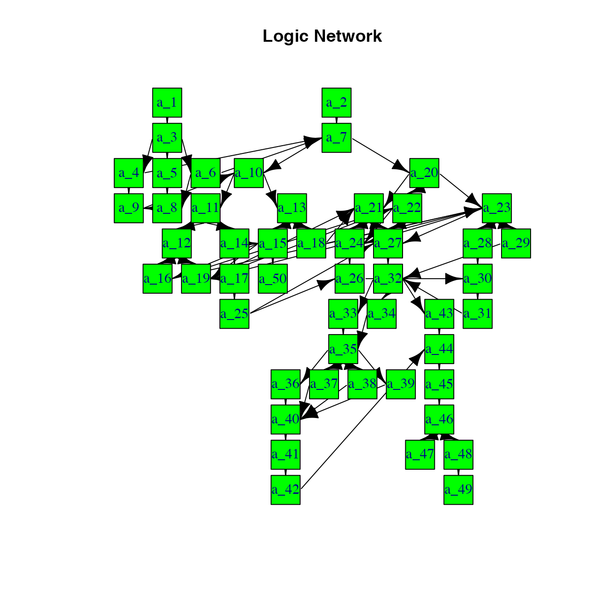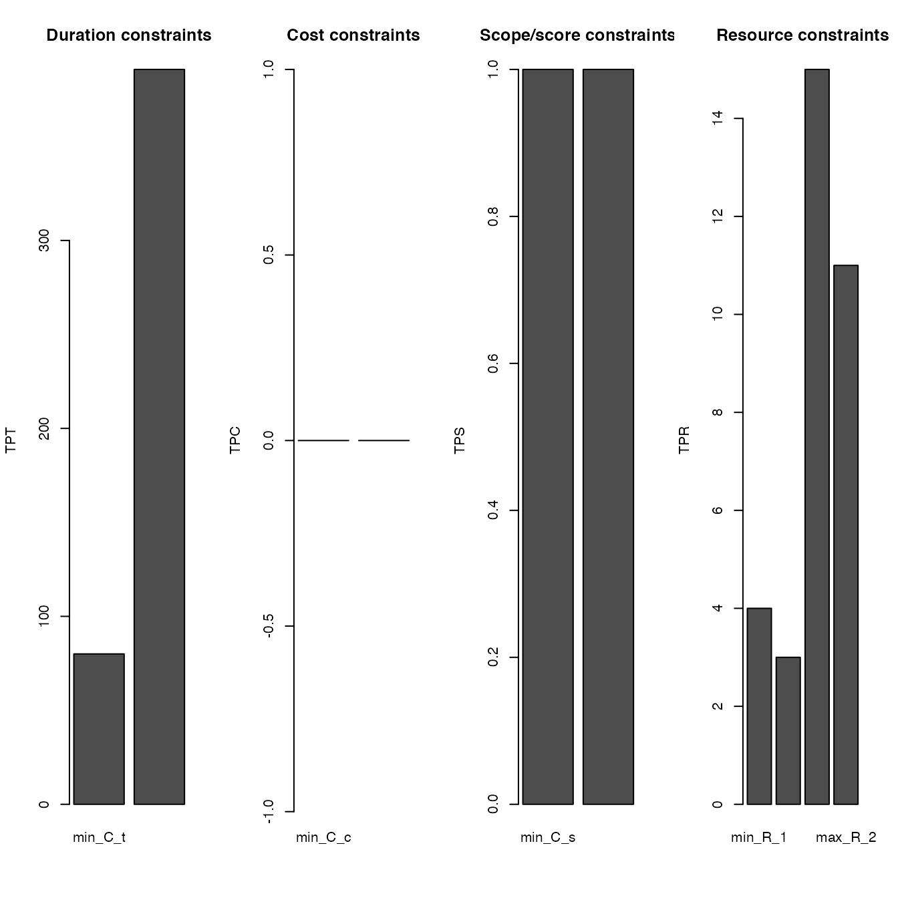 ### Plot Gantt Charts by completion modes
PSM<-PDM_list$PDM
DSM<-PSM[,1:nrow(PSM)] # Get PSM matrix
# Get time demands (time domain, TD)
TD<-PSM[,paste("t",1:w,sep = "_")]
# Plot 1st completion mode, scheduled by EST
plot(tpt(DSM,TD[,1]))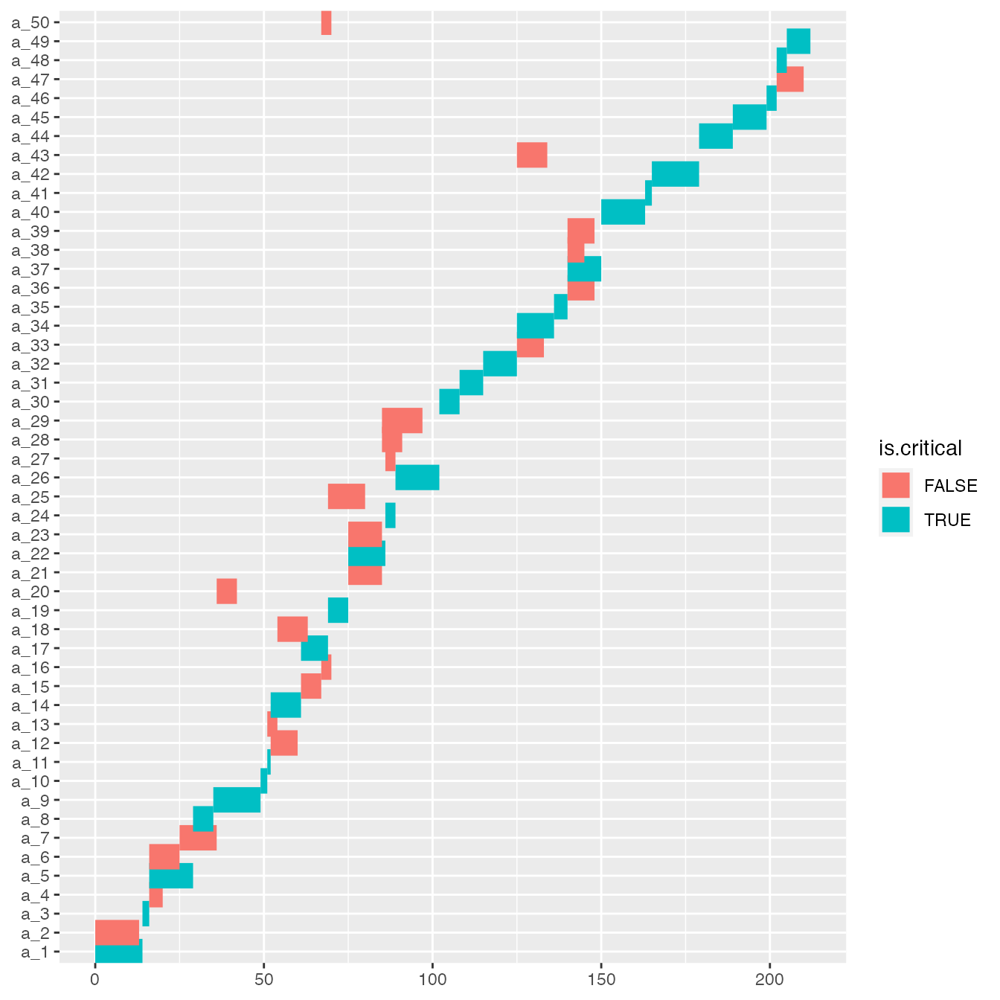
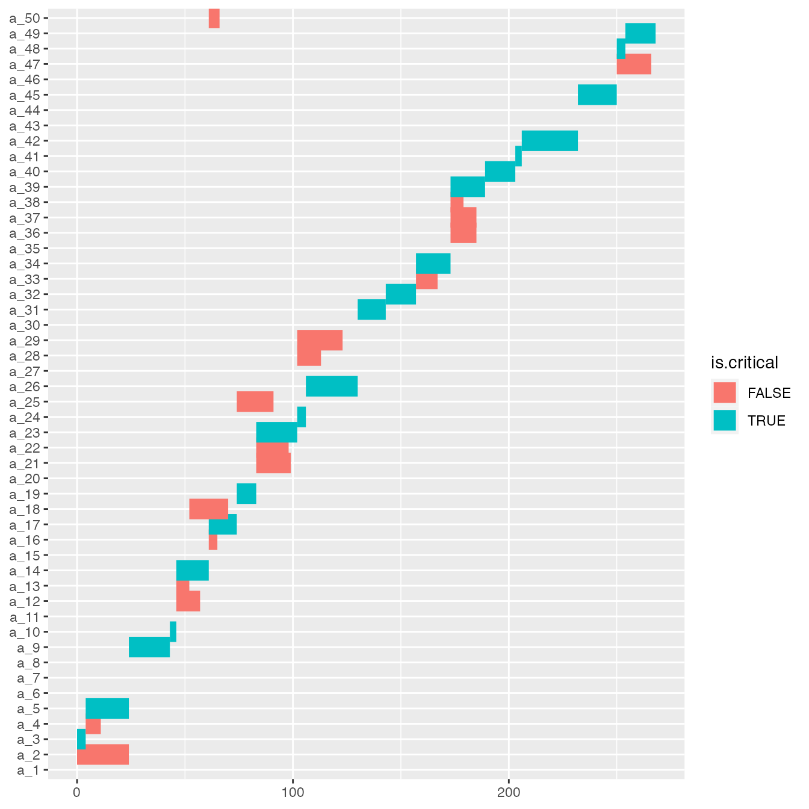

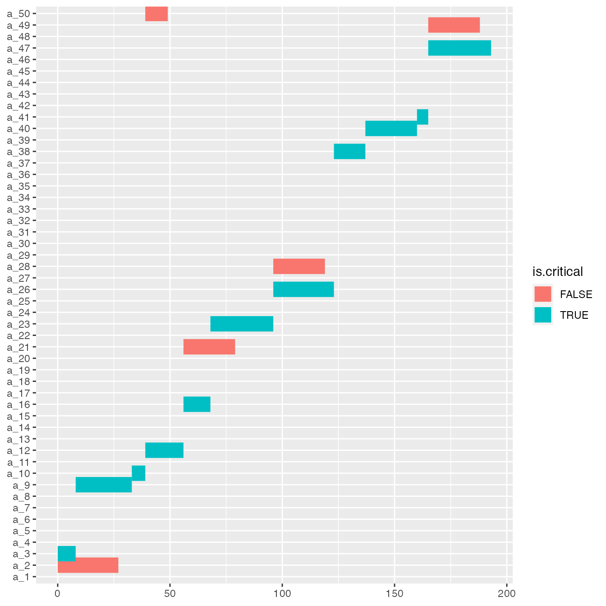
Uncertainty analysis
Effects of uncertainty
# Changes of demands followed by uniform distribution (default)
PSM1<-phase1(PSM,a=-0.2,b=0.4)
# Changes of demands followed by beta distribution
PSM1b<-phase1(PSM,a=-0.2,b=0.4,pdftype="beta")
TD1<-PSM1[,paste("t",1:w,sep = "_")]
TD1b<-PSM1b[,paste("t",1:w,sep = "_")]
# Plot original 1st completion mode, scheduled by EST
plot(tpt(DSM,TD[,1]))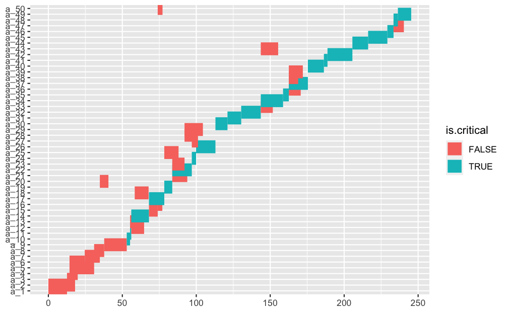
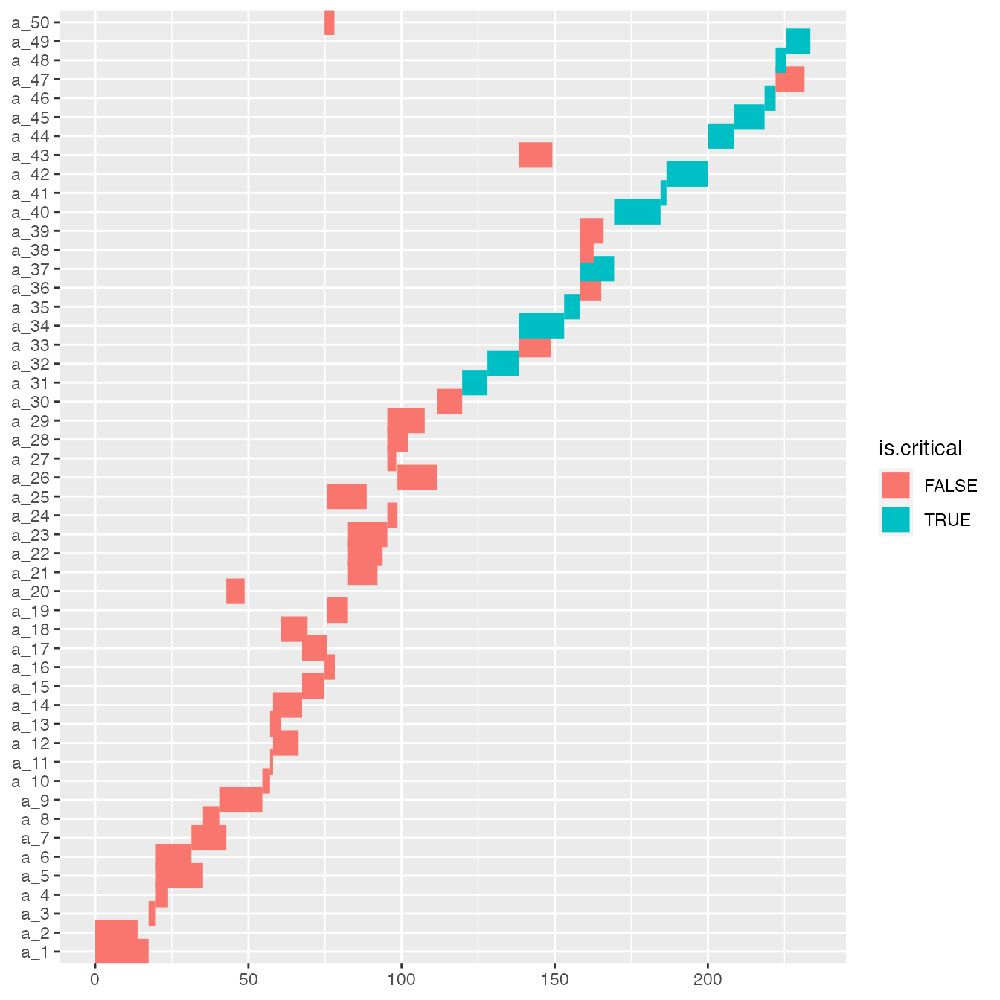
Effects of shocks
# Changes of demands followed by uniform distribution (default)
# p: percentage of task selection
# s: maximal scale effect
PSM2<-phase2(PSM,p=0.2,s=10)
TD2<-PSM2[,paste("t",1:w,sep = "_")]
# Plot original 1st completion mode, scheduled by EST
plot(tpt(DSM,TD[,1]))
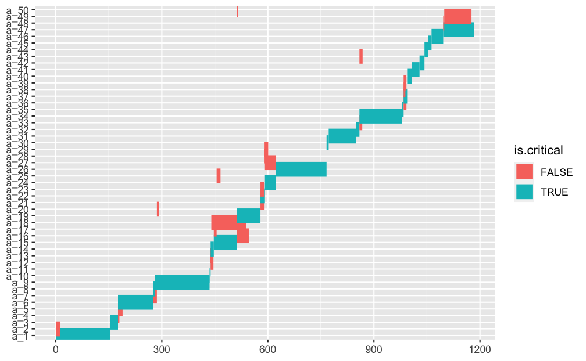
Change of structure (making flexible)
# Changes of demands followed by uniform distribution (default)
# P: percentage of selection
# S: maximal change effect
PDMp<-phase3(PSM,0.1,0.5) # New possible dependencies
PDMn<-phase3(PSM,0.1,-0.5) # Completion and dependencies will be flexible
# Plot original structure
plot(PSM,type = "orig",main="Original structure")
# Plot PDM with more restrictions
plot(PDMp,type = "orig",main="PDM with more dependencies")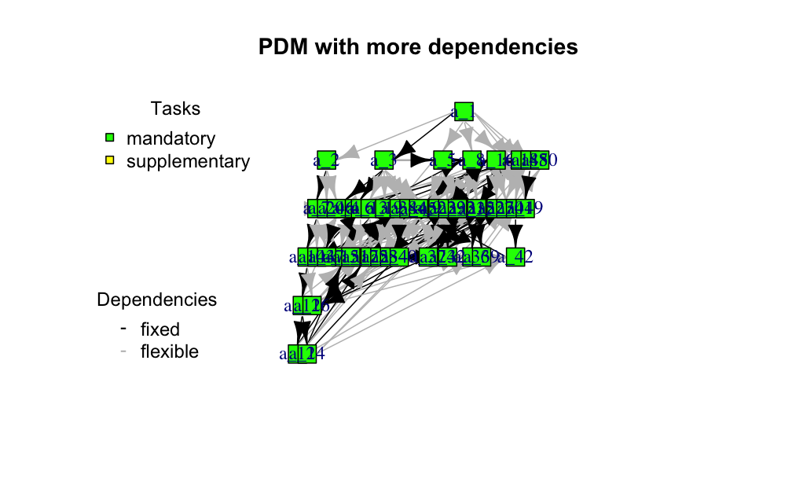
# Plot PDM with less restrictions
plot(PDMn,type = "orig",main="PDM with less restrictions")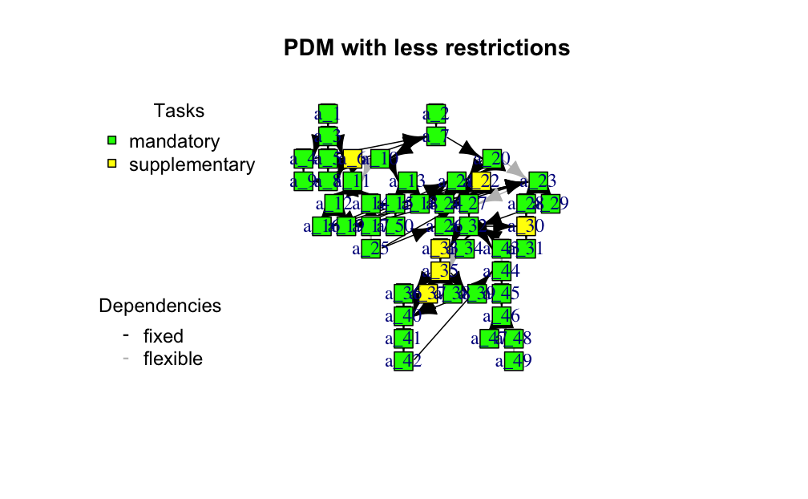